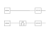

Re:search (11/?)
PhD - I year (part 4)
Right after FUSION 2022, I've addressed an underseen and vicious problem.Consider a tracking problem and suppose to have a sensor that provides position measurements. Since the object position (i.e. the estimand) is directly observed by the sensor, it is not strictly necessary to employ a Kalman filter to generate the estimates. Therefore, there are two possible schemes able to track the object:
-
1) Dynamic scheme
In this scheme the measurements generated by the sensor are processed by a Kalman filter. Then, the object position is estimated according to the output of the filter. Hence, the track is estimated via the processed measurements; -
2) Static scheme
In this scheme the measurements generated by the sensor are not processed by a Kalman filter. Then, the object position is directly estimated with the sensor output. Hence, the track is estimated via the raw measurements.
Accordingly, if the dynamic scheme performs "better" than the static scheme then the underlying Kalman filter is well designed, otherwise not.
So here the key question is the following:
How one can be sure that its Kalman filter is well designed?
static vs dynamic tracking

Essentially, the static scheme is a subset of the dynamic scheme where the Kalman filter is bypassed. If the static scheme performs better
than the dynamic scheme then one can say that the Kalman filter is wasting, rather than enhancing, the information contained in the measurements
generated by the sensor. Of course this is a bad situation that the tracker designer must avoid at all cost.